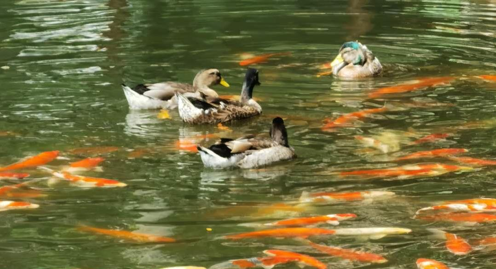

年轻的雌性两脚兽进入了新的环境，
你可以康康幸运的是，他们被安置在一个适宜的栖息地
当然，对于这些年轻的两脚兽来说，随意游荡在这片广袤的土地上是十分危险的行为。成熟的牧养者会明确要求得知他们的去向。
(我们都知道，“要求得知”不代表他们真的了解你要去完成怎样的一件伟大事业。）（XD）
长羽两脚兽
被毛四脚兽
水域之主
莫名的水塔
虽然个体之间存在一定的差异，但样本的总体水平相近。以我们正在追踪的这只两脚兽为例，每天早上，她准时踏入这片小盒子。

对于两脚兽而言，睡眠很重要。
记录年长两脚兽的经验。 （以各种方式）